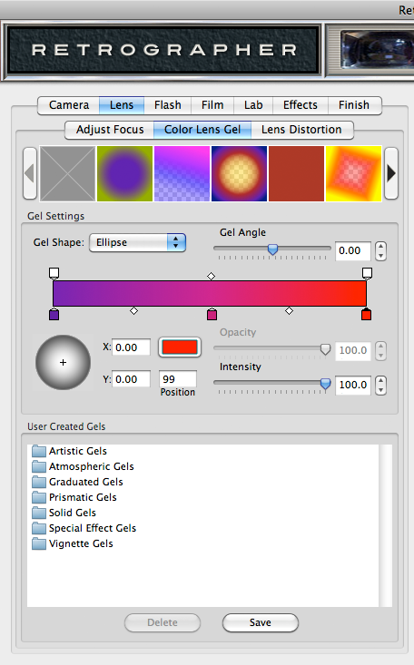
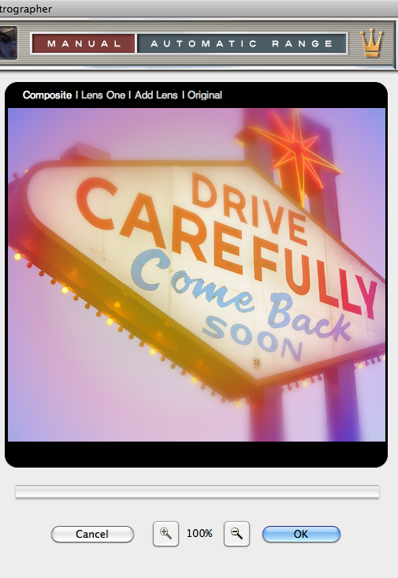

Let's Learn About Retrographer
Lens : Color Lens Gel Settings
Before there was Photoshop, if you wanted to colorize or stylize an image, you'd use a gel with your lens to reproduce these wonderful color effects directly in camera. Retrographer gives you an endless variety of lens gels to make your images brilliant! To access this section, simply click the Lens tab along the top of the UI, then the Color Lens Gel tab just below.
|  |
Select Your Lens Gel
- Lens Gel Preset Picker - The first thing you may want to do is choose from our default lens preset gel effects you'd like to start working with. To do so, simply click the desired lens gel preset effect you'd like to use from the filmstrip picker by clicking on it. Click the arrows to the left and right of the picker to browse through the gel effects or to remove the gel effect, just click the grey box icon in the far left of the picker.
* NOTE - We've created loads of amazing gel presets, so if you can't find what you're looking for in the preset picker, check out the presets in the User Create Gels area for plenty of great options!
Adjust the Lens Gel
Since lens gels come in all shapes and sizes, we've given you the ability to adjust exactly how and where the gel is applied to your image.
- Gel Shape - Simply click the dropdown box to select the shape of the gel you'd like to apply to you image or select None to remove the gel effect. All other gel controls will remain disabled until a gel shape has been selected.
- Gel Angle - By default, the gel angle is set at zero but can be easily rotated incrementally up to 180 degrees in either direction. As the slider control is adjusted, the gel will rotate accordingly.
- Gel Editor - Drag any node or sub-node above or below the gel editor area to reposition the opacity or intensity location within the gel effect. To add a new node, click just above or below the gel editor and it will appear on the editor. To remove a node, simply click and drag the node away from the gel editor. Refer to the position, opacity and intensity control just below the gel editor to fine-tune the node settings.
- Gel Offset - To modify the position of the gel effect on your image, click and drag the + icon on the shaded sphere just below the gel editor. For more precise control, you may also adjust the numbers in the X and Y coordinate boxes respectively.
Create Your Gel
We set out to create the easiest and most powerful gel editor we could design to give you complete control over every gel you make! The gel editor is deceptively simple to use but may look a bit confusing at first if you aren't familiar with this type of editor. To get you started creating your own gel effect, we'll take you through it step-by-step.
- Reset the Gel Nodes - To start, simply click the No Gel preset (grey box thumbnail on far left) from the Lens Gel Preset Picker.
- Select a Gel Shape - Click the Gel Shape dropdown menu and select a gel shape you'd like to work with.
- Adjust the Top Node Opacity - Click on any node above the gel editor and adjust opacity level on the Opacity slider below. This controls the transparency of gel used in a specific area of the image.
- Adjust the Top Node Intensity - Click on any node above the gel editor and adjust intensity level on the Intensity slider below. This controls the intensity of gel color used in a specific area of the image.
- Adjust the Bottom Node Color - Click on any node below the gel editor and Click the color swatch icon just below to launch the color picker and select the desired gel color at that area within the gel and repeat for each node.
- Adjust the Bottom Nodes - Click on any node below the gel editor and adjust intensity level on the Intensity slider below. This controls the strength of the gel effect in a specific area of the image.
- Adjust Nodes - Simply click to add new nodes or drag to change the position of or remove existing nodes to see how they effect your gel. You can also drag the smaller sub-nodes located on the gel editor to change the stress of the gel.
- Fine-Tune Your gel - From there, you can adjust the gel Angle or pick a different gel Shape to change the look of your gel. If you want to create multiple gels, simply click the Add Lens tab to create a second lens and gel effect.
User Created Gels - The User Created Gels dialog allows you to save or apply previously saved gel settings to the image you're working with, and we've created plenty of great gel presets to get you started. Once you've created a gel effect setting you like, click the Save button, name the setting and click OK to save this setting. To recall and apply a setting, simply click on the setting name in the dialog box. To delete a setting, simply click its name in the dialog box and click the Delete button.
Working with the Preview Window
- Preview Options - Above the Preview window at right, you'll notice some viewing options. By default the Composite option is selected to show you what all combined tabbed section effects look like applied to the image. At any time you can click the Original option to toggle between the unaffected image and a preview of the filtered image with all effects applied.
- Preview Options - Lens Multiplier - By default you are only working with a single lens effect (Lens One), by clicking the Add Lens option, you can now define an additional lens effect with its own settings (Lens Two). You can easily toggle between each lens effect by clicking Lens One or Lens Two or click Composite to view the fully composited preview with both Lens effects applied in addition to all combined tabbed section effects. At any time you can delete either lens effect by clicking the red close box icon to the right of the lens name.
- Magnifying the Preview - Below the Preview window, you'll see the magnification controls. By clicking the appropriate icon (- or +), you can increase or decrease the magnification of the Preview window. The current level of magnification is shown between the magnification icons.
- Moving the Preview - When you have increased magnification and wish to view the texture effect on the rest of the image not visible in the Preview window, simply move your mouse into the Preview window and click and drag your image around to reveal the texture effected image.
- Re-positioning the Lens Effect - To modify the position of the lens effect on your image, hold down the Command (Apple) key (or the Ctrl key on Windows) then click and drag the crosshair icon within the Preview window to adjust the center of the effect.